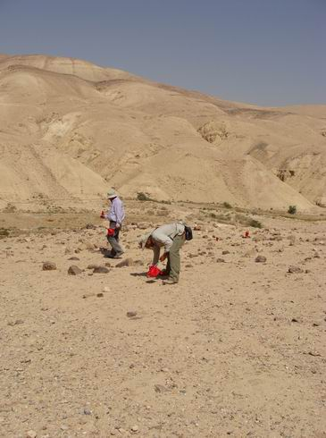

Introduction
The
archaeology
of
early food production has
become a topic of global interest for those seeking to trace long term
human
impacts on the environment. Thus far, however, research in Southwest Asia has focused primarily on the
origins and evolution of plant
cultivation, rather than specialized pastoralism — the other major
component of
this early food producing system. Although mobile pastoralism is
frequently
invoked to explain changes in the density and spatial distribution of
agricultural sites through time, and its consequences cited as
important in the
abandonment of the large PPNB (10,500 – 8,250 cal B.P.) villages, it
has been
little studied in its own right.
Intellectual Merit
The
research
proposed
here
will examine the origins, nature, and evolution of
mobile pastoralism in the Late Neolithic (8,250 – 7,800 cal B.P.)
through the Chalcolithic
(7,800 – 5,500 cal B.P.) and Early Bronze age I (5,500 – 5,050 cal
B.P.) periods
in the Wadi al-Hasa region of west-central Jordan.
The objectives of the research are to understand 1) how
early
pastoral
economies developed, 2) how
early pastoralists
interacted with farmers (and possibly foragers) in the region, and 3) the changing impacts of
pastoralism on Southwest Asian landscapes. The study will conduct
low-impact surface recording of potential pastoral sites in
west-central Jordan
as well as limited new survey in the region. The investigated sites
will be
drawn from both the extant site database as well as from the pool of
sites that
will be discovered during the survey portion of the proposed field
work. Types
of analysis include in-situ lithic photography of artifacts,
computerized
analysis of artifact morphology, artifact density mapping,
architectural
mapping, and geomorphologic mapping. Sites will be dated through a
combination
of typological analyses, presence/absence of diagnostic artifacts, and
whole
assemblage analysis; calendar date age-range estimates will be assigned
to
site-types through correlation of the locations of the different
site-types
with landforms of known age. Landforms will be dated through Optically
Stimulated Luminescence dating of sediments. New geomorphologic maps
will be
created to facilitate this correlation. All portions of field work will
utilize
GPS and remotely sensed data to ensure highest possible spatial
accuracy. The
data recovered from field work will be used as input for Geographic
Information
Science-based modeling of different pastoral economic strategies and
the effects
these had on landcover and erosion. These data will also be used to
evaluate three
previously proposed models for the origins and development of mobile
pastoralism in the desert areas of the southern Levant—the
Agropastoral
Split
Model, the Shifting Strategies Model, and the Mobile
Forager Transistion Model.
Broader Impacts
An
important
goal
of the research is to illuminate
the long-term impacts of mobile pastoralism under different social,
political,
economic, and environmental conditions. The work will improve our
understanding
of the pastoral component of the regional Late Prehistoric food
production
system, which should help further contextualize the known diachronic
patterns
of settlement and economy of nearby Late Prehistoric sedentary
agriculturalists.
The research should also provide a case study of the long term effects
of
mobile pastoralism, which may be of use to policy makers and aid
organizations in
developing nations with populations of traditional pastoralists.

|
| WHAPP fieldwork
studying ancient pastoral sites in Wadi Hasa, Jordan. |
n.d.
Ullah I.I. What to do with legacy data: methods for
finding and correcting site coordinate errors in pre-GPS survey
databases. Manuscript in development.
2009 Ullah
I.I.
Presentation summarzing the preliminary findings and proposed new
research for WHAPP. (PDF)
2009 Ullah I.I. Ancient Pastoralism and
Landscape Change in South Central Jordan.
Poster presented at the 74th Annual Meeting of
the Society for American Archaeology,
Atlanta,
GA
2008
Ullah, I.I.;
Schuldenrien, J.; and M.
Smith. Preliminary Report of the 2008
Season of the Wadi Hasa Ancient Pastoralism Project. Report submitted to the Department of Antiquities of Jordan.
Click HERE
to download a pdf of the latest draft of the NSFGrant proposal for this
project. (January, 2010)